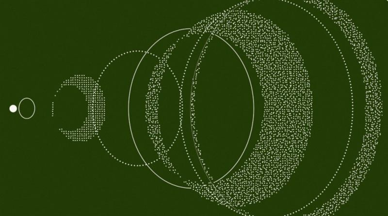
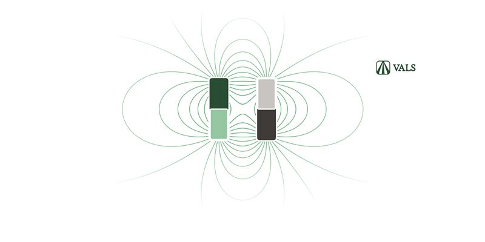
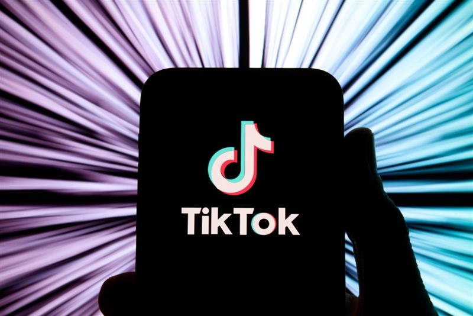
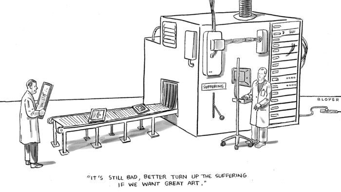
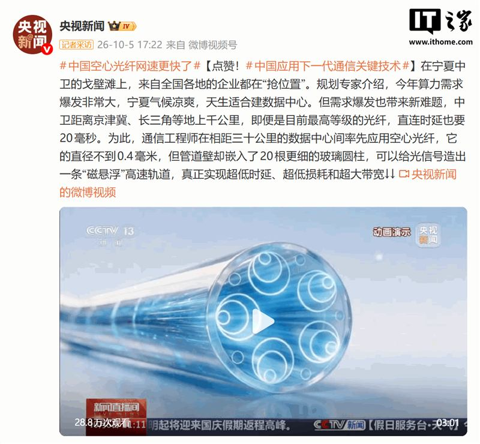

AI 每日精选
2026 年 10 月 6 日，竞争与合规同时加速。竞争端，西方阵营迎来开放权重旗舰——英伟达投资的 Reflection 发布 5010 亿参数的稀疏 MoE 模型 Beam，正面瞄准 DeepSeek、Kimi 的代码与智能体场景，把「开放权重」的战场从中国实验室烧到美国初创。合规与安全端同步收紧：挪威拟立法禁止在敏感场所使用 AI 眼镜（AI 眼镜遭遇的首个政府级打击），安全研究揭示智能体间通信协议 MCP 存在结构性信任漏洞，OpenAI 则按欧盟《人工智能法案》开始在 ChatGPT / Codex 文本中嵌入隐形水印。产品与变现侧，OpenAI 上线图片广告、TikTok 推出 AI 购物助手，个人 Agent 继续向群聊、通话与招聘场景扩张，「入口之争」进一步升温。
一、模型与开源：开放权重新玩家与训练范式探索

apiIt sounds like this is less computationally efficient than backprop, but more easily parallelizable. Is that fair?
vatsachakNot necessarily, backprop is highly parallelizable since it is just a bunch of matrix mults. Something like Dust skips the backward pass on backprop. But other techniques like Neural Predictive Coding can be completely a…
polyominoEven though this is way more expensive than backprop, could a hybrid approach where you fine tune an existing checkpoint that's been backpropped unlock further gains? It would be cool to apply this to different stages an…
eriwang915Dust's 243M model beating a 120x smaller one at most population sizes is the surprising part; bigger nets got more population-efficient, not less.
wrecked_emDefinitely more than meets the eye.

Ygg2Ugh. Unless this has been actually experimentally verified to be a room-temperature and room-pressure superconductor, it's about as ground breaking as "Yet another promising nuclear fusion candidate theoretically described."
ChickeNESWell, given that this is a semiconductor, and not a superconductor, I don't see how that is relevant?
LercI agree that it is about as ground breaking as "Yet another promising nuclear fusion candidate theoretically described." I'm not sure why you would consider new and promising avenues for research to not be ground breaking …
vatsachakI could have gotten this in one prompt lmao
rfgplkThis gave me the idea to actually create a full (QED accurate) atomic simulation software. Essentially would allow you to play around with things like this. At a glance my workstation _probably_ has enough compute to han…
二、安全与治理：从硬件到协议的多点收紧

m-hodges> Starting today, API customers globally will be able to opt in to text watermarking for select models. Text watermarking will remain off by default in the API. > Over the coming weeks, we will add an invisible watermark
mgaxThis is such a waste of time. If someone wants to bypass this it will be rather simple. Just change the words. If someone wants to avoid fingerprinting they will. Can’t we just focus on building rather than spending brai…
Analemma_I think some EU regulations have merit and some don't, but going "can't we just focus on building instead of spending brainpower on following the law" is not going to win you much affection. There might be a connection b…
SpicyLemonZestThere's lots of regulations that are easy to bypass. It's absolutely trivial to, say, pull 30 amps from a home circuit rated for only 15 amps. But most people will just trip the fuse because they don't know what they're doing…
gonzalohmFocus on building what? A future in which only big companies get credit for their work?
三、产品与商业化：Agent 抢入口，广告找变现


dormentoThe copyright washing machine strikes again.
drdaemanThat’s not a copyright issue, it’s a trademark issue.
skybrianWhatever the original intention, this is clearly a bug and should be fixed. But should ChatGPT sign its cartoons with its own name or leave them unsigned?
Forgeties79No one should be allowed to claim they drew something when they didn’t draw any part of it and LLM’s are not people/can’t work without a person. We don’t credit pens and paintbrushes after all. One could argue nobody sho…
saalweachterI mean, the bug is, "it generated the most likely cluster of pixels in the corner of a New Yorker cartoon".
四、基础设施与产业：光通信、算力与出口管制


htrp> Beam is a sparse Mixture-of-Experts model with 501 billion total parameters, 23 billion active, built for coding, reasoning, and agentic workloads. > Beam’s capabilities come from major investments in both pretraining …
zelphirkaltAnd also a "proprietary data set" hahaha... Probably just means they don't want to show it, and it is data, that either they shouldn't have, or that there is nothing special about their training data and it is just meant …
wronglebowskiI'm all for more open models, but talk is cheap and this is a rather pointless announcement without anything backing it up. Publish your weights and HF repo or shut up IMO.
Loquebantur> Beam is undergoing final red-teaming and evaluations. You can sign up here for early access to the model. > We will release the weights, technical report, model card, and developer artifacts later this month .
wg0Suppose I inherited a data center spanning several hundred acres full of GPUs and free electricity. Where do I get the data? I mean, this many models. They have to start somewhere.